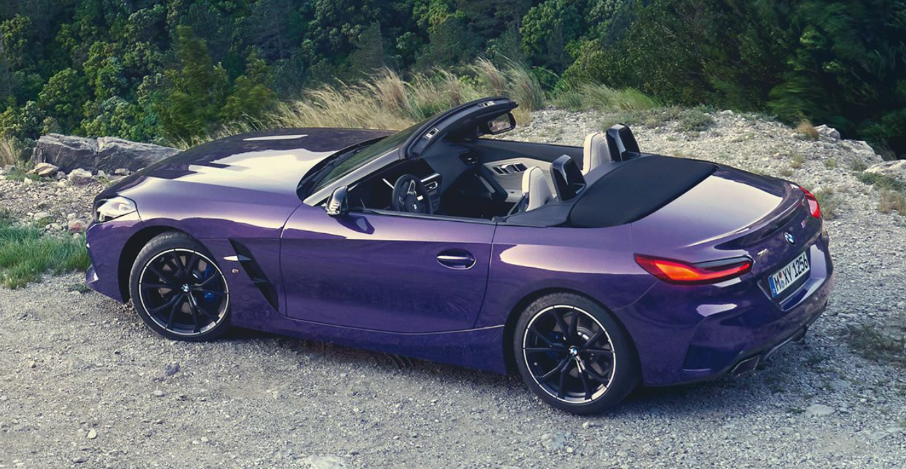
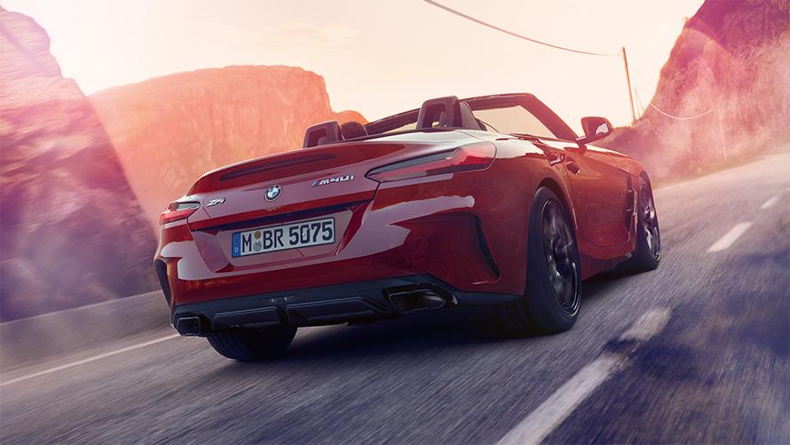
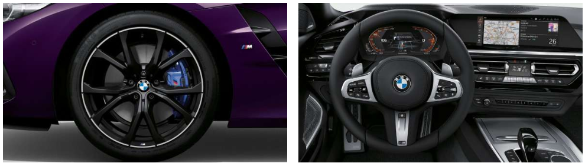

Eigenschaften des Autos
- Anzahl der Türen: 2
- 0-100 km/h Beschleunigungszeit: 4,5 - 6,8 Sekunden
- Ladevolumen: 281 Liter
- Motorzylinderkonfiguration: Reihenmotor
- Abmessungen: 4.324 mm L x 1.864 mm B x 1.304 mm H
- Motoren: 2,0 l 4-Zylinder, 3,0 l 6-Zylinder

JETZT MIT SERIENMÄSSIGEM M AERODYNAMIKPAKET
Das serienmäßige M Aerodynamikpaket mit M spezifischer Frontschürze, Heckschürze, Seitenschwellern und Diffusoreinsatz vermittelt Dynamik und Sportlichkeit pur.
- M spezifische Frontschürze, Heckschürze und Seitenschweller in Wagenfarbe
- Nierenrahmen in Chrom Hochglanz mit BMW Niere
- Diffusoreinsatz in Dark Shadow metallic

DIE FAHRDYNAMIK-HIGHLIGHTS DES NEUEN BMW Z4.
M SPortdifferenzial
Das M Sportdifferenzial optimiert die Traktion und Fahrstabilität bei hoher Fahrdynamik sowie unterschiedlicher Straßenbeschaffenheit
M Sportbremse
Die leistungsstarke M Sportbremse zeichnet sich durch große Bremsscheiben und exklusive blau lackierte Bremssättel mit M Schriftzug aus.
Variable Sportlenkung
Die Variable Sportlenkung mit Servotronic macht das Lenken bei niedrigem Tempo leichter und bei hohem Tempo präziser, weil sie sich Fahrsituationen anpasst.